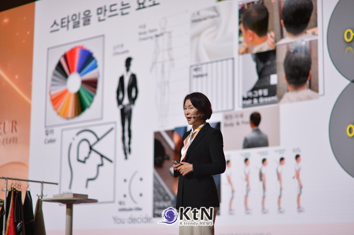
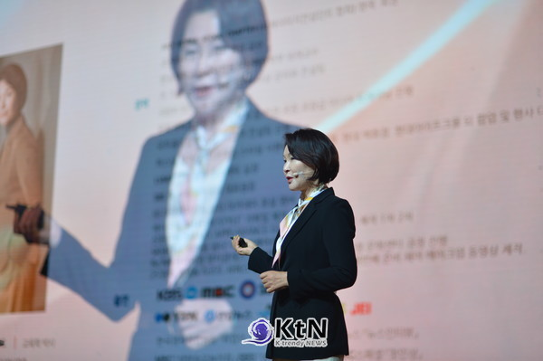
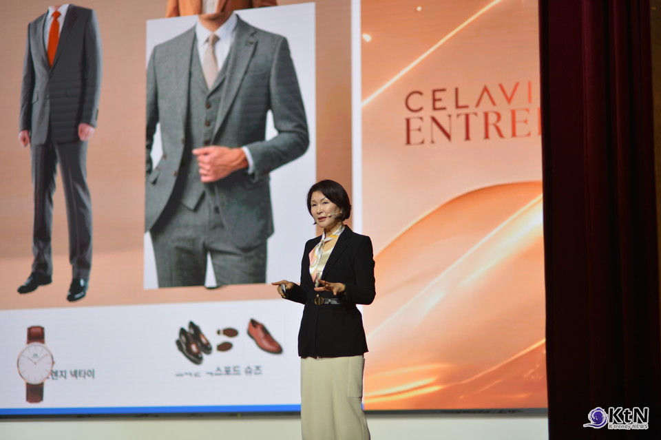
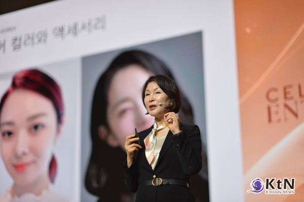
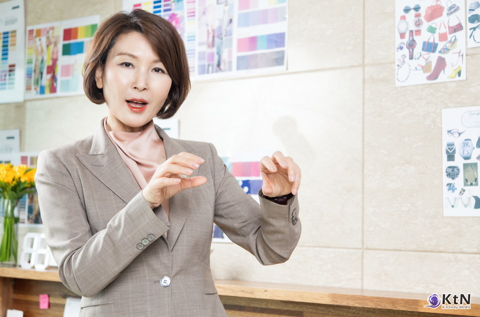
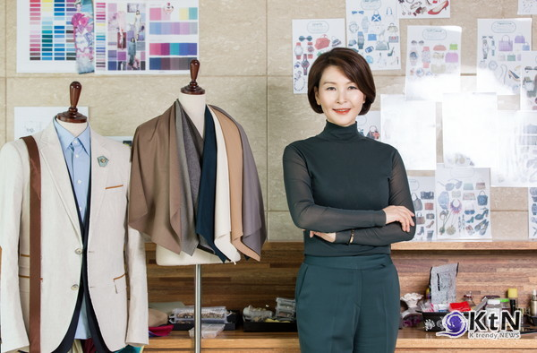
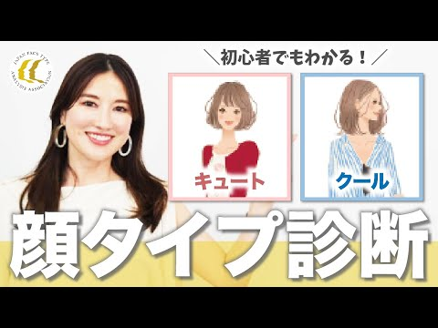
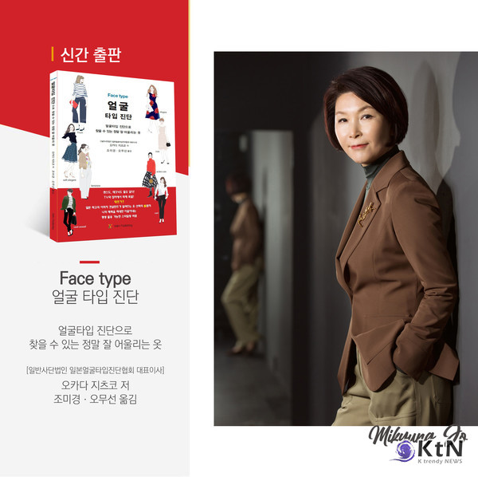

COLUMN & PRESS
Featured Columns & Press

K-Trendy News
[몸짓의 경제학④] 고객 접점의 바디랭귀지, 서비스 생산성을 바꾸는 몸의 신호
2026.07.10

K-Trendy News
[몸짓의 경제학③] 자세와 걸음걸이, 리더십이 공간에 남기는 신뢰
2026.07.09

K-Trendy News
[퍼스널컬러와 색의 언어⑤] 색의 확장, 옷장을 넘어 행사와 공간까지
2026.06.29

K-Trendy News
[이미지 커뮤니케이션①] 이미지, 외모를 넘어 사회적 언어로
2026.06.20

K-Trendy News
[2026 컬러 트렌드②] 화이트, 가장 까다로운 컬러가 되다
2025.12.27

K-Trendy News
[K-BEAUTY TREND④] 내 얼굴, 나의 브랜드
2025.09.04
K-Trendy News
[이미지 경제학①] 퍼스널 브랜딩, ‘나를 관리하는 시대’
2025.08.06

K-Trendy News
[이미지의 경제학①] 퍼스널 컬러가 바꾸는 소비 결정
2025.07.14

K-Trendy News
[뷰티 트렌드①] 퍼스널 컬러 경제, K-뷰티 권력을 다시 쓴다
2025.04.29

K-Trendy News
[기획특집] ‘어울림’의 미학, 얼굴에서 시작되는 스타일링
2025.03.22

K-Trendy News
[KtN 기획] 럭셔리 향수의 귀환, 하이엔드 브랜드의 전략
2025.03.21

K-Trendy News
[컬러 트렌드] 퍼스널 컬러를 활용한 브랜딩 전략
2025.03.17

K-Trendy News
[컬러 트렌드] 2025년 퍼스널 컬러 트렌드
2025.03.12

K-Trendy News
[비즈니스 & 이미지 리포트] 첫인상을 결정하는 스타일링
2025.02.16

K-Trendy News
퍼스널 스타일링의 새로운 기준, 『Face Type 얼굴 타입 진단』 출간
2025.02.15

K-Trendy News
[칼럼] 비주얼 커뮤니케이션의 첫 시작 ‘퍼스널 컬러’
2021.01.05